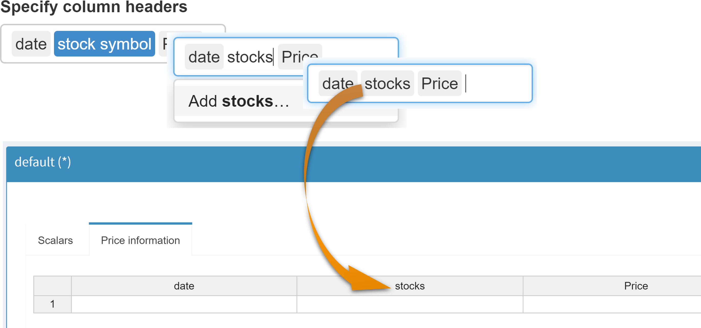

If symbols have been grouped using the grouping option, only the individual symbols and not the configured groups are displayed here. If you want to change the position of a group, drag and drop the symbols that belong to this group to the desired position.
Symbols
Introduction
In this category, settings can be made that affect the symbols displayed in MIRO in terms of their name or arrangement. Changes made in this category are automatically saved.
Symbol and Column Names
Under the heading Naming, the names of the GAMS symbols displayed in MIRO can be adapted. This includes the labels of the tabs displayed for each symbol as well as the table column headers.
-
Specify symbol alias:
Specification of the labels of the symbol tabs. -
Specify column headers:
To adjust a column header, the corresponding element must be deleted and replaced with a new one.
Symbol Order
Here you can adjust the tab order in which the symbols are to be displayed in MIRO. To do this, simply drag and drop the symbols into the desired order.

Note:
Symbol Groups
Multiple tabs of input symbols (or output symbols) can be grouped together. All symbols in a group are either displayed in a separate tab or side by side on the same tab.
Input widgets can also be
grouped. The order of the widgets can be changed directly
when specifying the group members.
Note that adding or removing widgets does not
automatically update the dropdown menus for selecting
group members. You must restart the Configuration Mode for
these changes to be reflected here.
Example:
For the input data of the transport model, one might want
to group the symbols with geodata together:

Which is displayed in the MIRO App as follows:

Aggregate Scalar Widgets
If enabled, all scalar input widgets (slider, dropdown menu, etc.) are displayed in the same tab and separated otherwise.

Use Output Data as Input Data
In some situations you may want to run a model and use the results of the run as input for the next run. Such an iterative process is possible by creating a link between the output and input symbol. By doing so, input data for a symbol ("target") can be populated from an output sheet ("source").
Populating an input table from the linked dataset can be
initiated by clicking the
 button.
button.
The following rules must be observed when configuring symbol links:
- The source symbol needs to be an output symbol
- The number of dimensions of "source" and "target" symbol must be identical
- The header types (string / numeric) of linked symbols need to be identical
- Neither "source" nor "target" may be a table in which scalar values are grouped. This includes the input scalars table, the output scalars table and the table in which scalar variables and equations are summarized.
- An output dataset can only link to a single input table
-
An input table can be populated by different output
datasets